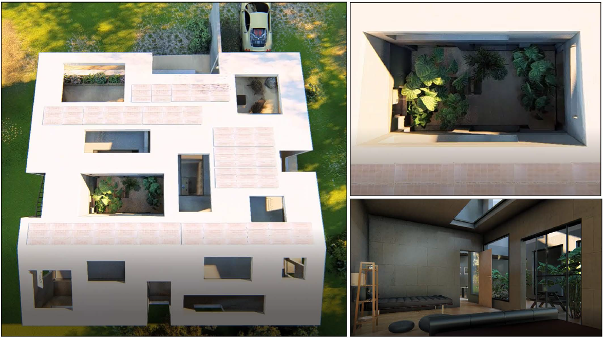
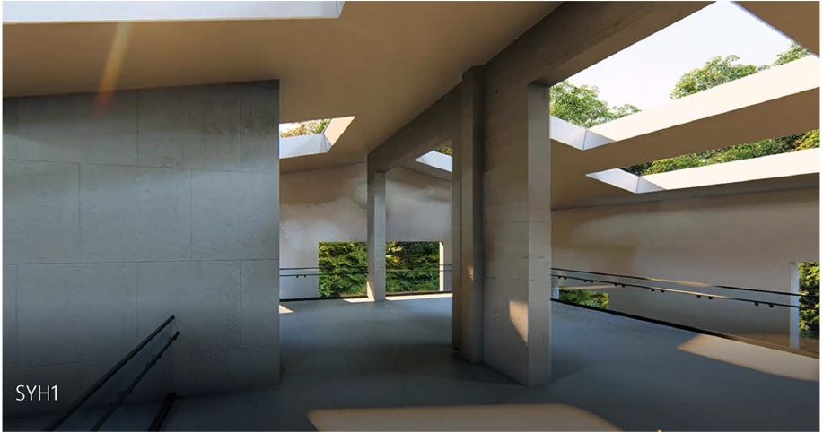
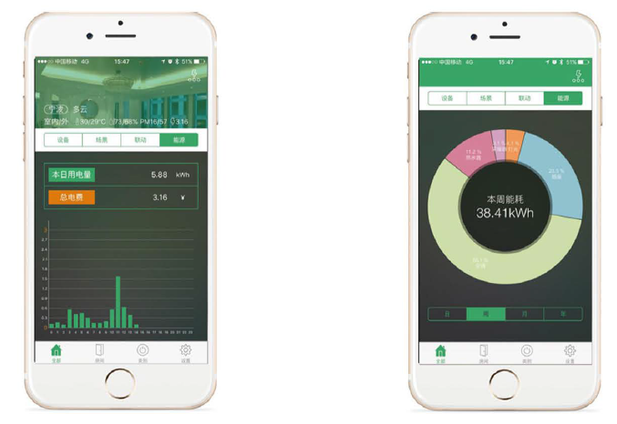
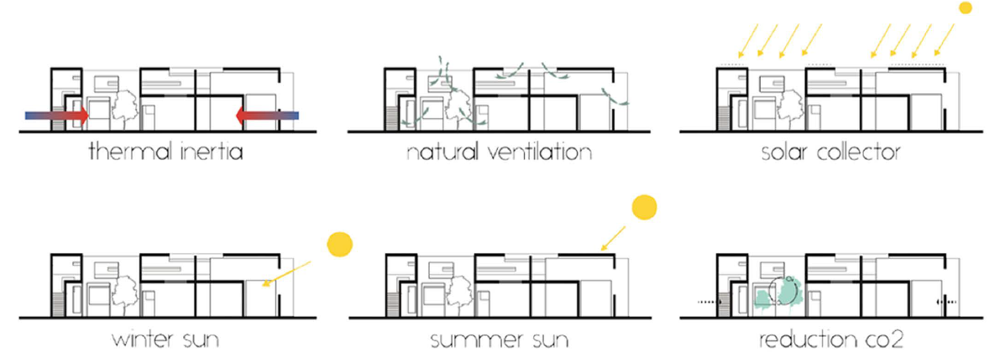
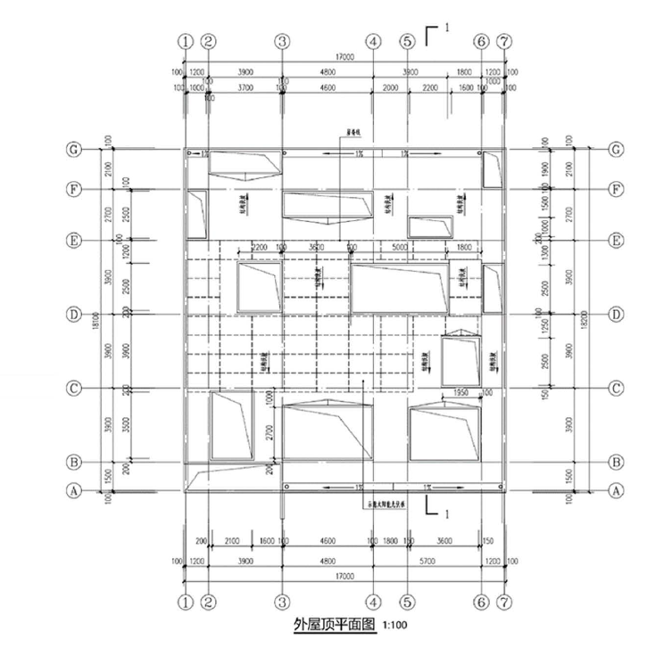
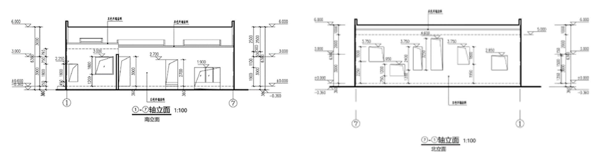

Innovation
To solve for the reduction of energy and usage of lights we designed the home to allow in plenty of natural light. Reducing electric costs and providing a better feeling throughout the home. To help purify the air in the house we incorporated a garden inside the boundaries in an effort to help increase the amount of pure oxygen within the house. Solar panels on the roof produce the energy that will run the home.

We also are using energy efficient appliances to help with the electrical burden. The rainwater pool will help us with our water consumption and reduce the total amount we use. The pool water will be used for cleaning and tasks like it as well as for watering the plants within the garden. The outside shell of the house is designed to have an optimal air flow by utilizing a composite material that is lighter in weight and allows air to pass more easily through it. CL system (Composite Light-Weight) has a space frame that is connected with two layers of steel wire mesh. It is lighter and uses less space than most other materials. It gives us the advantages of low heat loss, good heat-insulation property, and long-life service. The inner wall is inforced cement composite material, which has no seams, and no connected parts that waste energy. The house is an indivisible whole enhanced by the strength of the wal l.
To any home we can incorporate natural lighting and a plant enriched environment to reduce the electrical costs and to provide the home with cleaner air. It is practical even for the less financially proficient home owners. We attempted to used simple ideas that can reduce costs and provide us with the most efficient outcome for the cheapest price. A rain collection system is also a very simple idea that can be applied to any home and help reduce water costs. It has a large market appeal in places where water is scarce and expensive. It is also desirable because it will not require much care. The overall market ability of the innovations in our home is high because they are not all technologically based so elder people and the people we are targeting will have a much easier time operating them. The house incorporates technology and appliances that reduce electric costs as well.
We incorporated the most recent solar technology into the home. As well as energy efficient appliances that will help to keep electrical output low. The HVAC system is also energy efficient and will not have to be used a lot due to the insulation in certain parts of the house. The roof and the composite material walls on the outside are designed to allow for optimal airflow through the courtyards and other parts of the home making it easier to keep the electric cost of the air conditioning low. The house takes advantage of the wind direction during the summer, the wind is blowing in the Southwest direction and the home has the most holes on the side the wind hits.


On February 26, 2015, the National Bureau of Statistics issued the Statistical Communique on National Economic and Social Development in 2014. According to the communique, at the end of 2014, the number of people over the age of 60 in China was 212.42 million, accounting for 15.5% of the total population; the population over the age of 65 was 137.55 million, accounting for 10.1 %, exceeding 10% for the first time. The pension problem in our country has erupted in a centralized and short-term manner. The problem has been raised to the strategic height of "the development of the country and the well-being of the people".
Functionality
The heating and cooling system to our home is very interesting, with the ability to utilize a Multi-Function Heat Pump system integrated with the smart home technology our goals to reach a net zero energy level are achievable. The system incorporated with the smart home system will be user friendly and allow the most convenient way of monitoring and controlling the temperature of the home in a very energy efficient way. It is designed to be easy for anyone to use and enhances comfort and house performance at the same time.
The benefits of the system are that it works both as the heating and cooling system in the home so maintaining a temperature will be easy. The humidity and the air movement aspects depend on more than just the air conditioner because we have designed this house to catch and optimize the wind that hits it, air movement will be distributed partly by the wind and partly by the HVAC. But it is a central air system and will allow for the entire house to receive air movement. The system is designed to be energy efficient and should allow for optimum air flow, quality, and comfort.
Reliability
The owner operations are all based off the smart house system. Through out the year not much maintenance will be required throughout the home. The maintenance for the owner is based on the mess that they make; the systems should operate smoothly without any owner maintenance for over a year. The smart system should alert them when any operation and maintenance is required at which point they can contact someone to do the maintenance for them since this home is designed for an elder family.
During peak hours of the summer we expect the systems to operate for anywhere between 3 to 5 hours at an elevated level. The system will have no problem functioning during that time, and if it is sunny the solar panels should collect enough energy to run the system for the time needed. The system will be able to run longer than the time expected but there should be no need for that.
Efficiency
The system is mainly efficient in two aspects, one is smart control and the other is energy consumptïon monïtorïng.
As for smart control, the system makes multiple devices linked in order to reduce personnel operations. The user only need to press one button to have a multi-device scenario mode. Also, when you quit the mode, all the devices will be shut down together to prevent the waste of energy caused by forgetting to shut down the devices. And you don' t need to worried about the extra energy consumption when you are not at home , the leaving-home mode helps you finish.
Moreover, the system monitors the flow of energy and shows the data in statistic charts. It' s easy for users to know which device consumes the most of energy, to make appropriate adjustments to the use of electrical equipment. Thus it helps to reduce energy consumption and power peak pressure. By using the whole system , energy savings can be XXX kwh per year according to the statistïcs.
The whole system is wired, which is connected with RS-485. Compared to wireless system, our system is more reliable and will provide users a more stable service . It' s not easily affected by network conditions or other WiFi signals , which means the system can be used in more conditions and have a larger market potentia l.
As a renewable new energy source, solar energy has far-reaching significance for power generation. First of all, solar energy resources which are widely distributed on the earth are inexhaustible. Photovoltaic power generation systems can be used wherever there is light, and are not limited by geographical and altitude factors. What' s more, Solar energy resources are available everywhere so that the nearby power supply does not have to be transported over long distances, which avoids the loss of power caused by long-distance transmission lines. Secondly, the photovoltaic power generation process is simple, there are no mechanical rotating parts, operation and maintenance are simple, the operation is stable and reliable, and the service life is long (more than 30 years). Finally, photovoltaic systems, which do not emit any substances including greenhouse gases, can get rid of dependence on fossil fuels without consuming fue l. Photovoltaic systems are noiseless, pollution-free and friendly to the environment which are truly green and new types of renewable energy.
At present, photovoltaic power generation has a high level of technology maturity and has been successfully put into commercial operations with large installed capacity, the scale of construction and investment is flexible. The total installed capacity of this PV system is 10kW, which satisfies the power supply demand. And our PV system can change the angle of the panel in different seasons to achieve the maximum efficiency of solar energy. The overall engineering design is going to be effective and allow the team to reach an optimal efficiency. It uses modern technology and simple ideas to create the most efficient design in air flow and solar acquisition.

Documentation
The jury should have no problems understanding our home the descriptions provide in depth looks into what the drawings are showing. The audiovisual presentation is a virtual tour of the home, so the jury should have a very good idea of what the final outcome will ook like. The complete project is very accomplishable and the well-designed plans that are shown above as well as some that are not portrayed here most definitely give a full and complete perspective of what the home will be like

